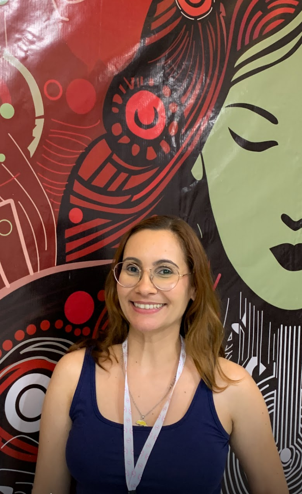

Olá, eu sou Talita!
Sou desenvolvedora fullstack jr na Gteci-PB e lá eu trabalho com Python usando o framework djando rest-framework.
Sou desenvolvedora fullstack jr na Gteci-PB e lá eu trabalho com Python usando o framework djando rest-framework.